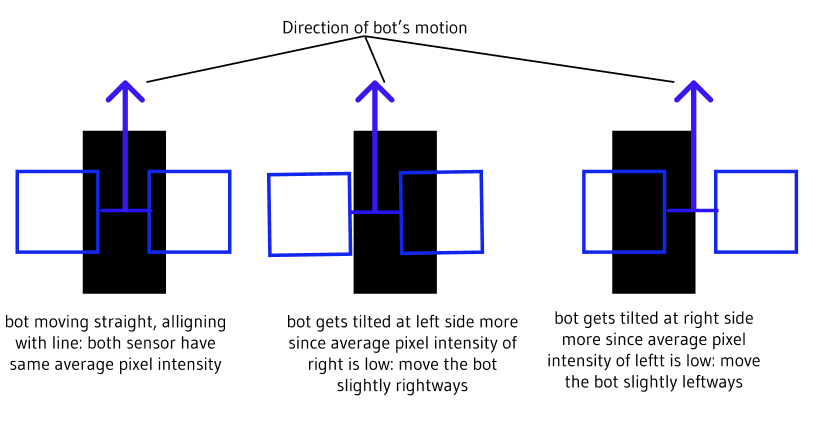
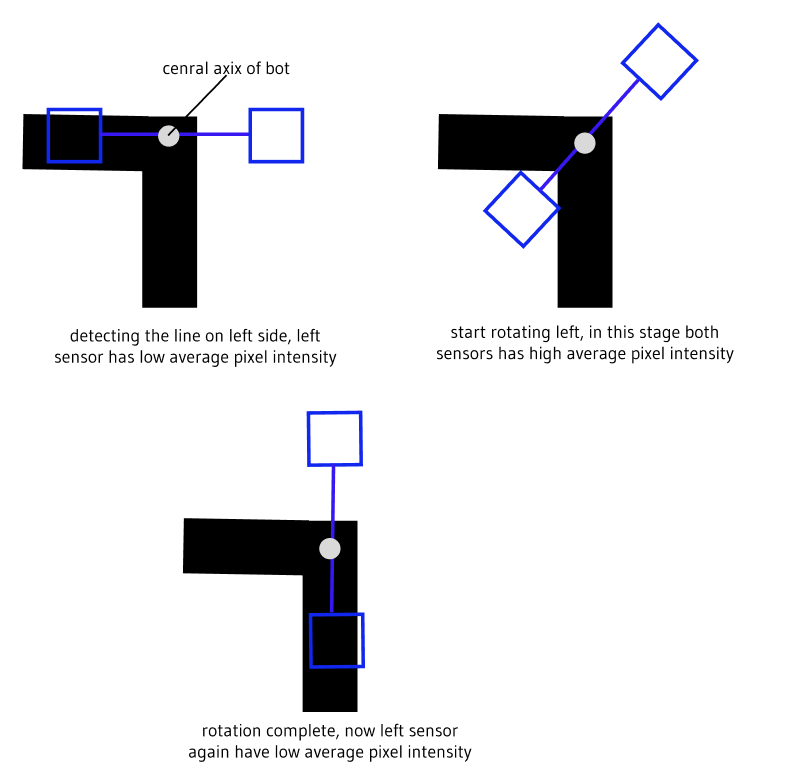

this is the basic principal of line following, in this way we can exploit average pixel intensity for following lines. for this the bot is using its front vision sensors
left_motor_speed = f(left_sensor_average_intensity)

right_motor_speed = f(right_sensor_average_intensity)
sometimes even following a straight line, misallignment and disorientation may occur, you can also check it by using this method
note the different stages, first we detect that the line is at left side since left sensor has low average pixel intensity. then we start rotating anticlockwise, in this stage both sensors have high average pixel intensity. we keep on rotating untill we get a low average pixel intesity for left sensor. then we understand that our rotation is complete. since the bot is rotating around its central axis, we have used its back vision sensors